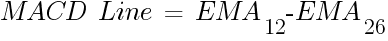
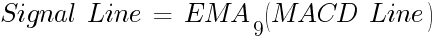
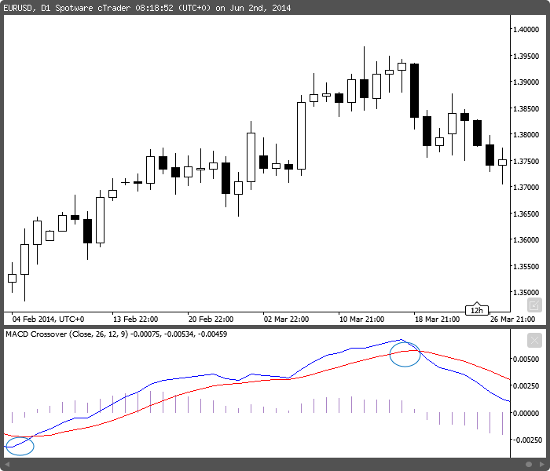

<!DOCTYPE html>
<html>
</html>
<head>
  <meta charset="utf-8">
  <meta http-equiv="X-UA-Compatible" content="IE=edge">
  <title>外汇站（fx-z.com） - 平滑异同移动平均线（MACD）</title>
  <meta name="description" content="">
  <meta name="viewport" content="width=device-width, initial-scale=1">
  <meta name="robots" content="all,follow">
  <!-- Bootstrap CSS-->
  <link rel="stylesheet" href="vendor/bootstrap/css/bootstrap.min.css">
  <!-- Font Awesome CSS-->
  <link rel="stylesheet" href="vendor/font-awesome/css/font-awesome.min.css">
  <!-- Google fonts - Roboto-->
  <link rel="stylesheet" href="https://fonts.googleapis.com/css?family=Roboto:400,300,700,400italic">
  <!-- owl carousel-->
  <link rel="stylesheet" href="vendor/owl.carousel/assets/owl.carousel.css">
  <link rel="stylesheet" href="vendor/owl.carousel/assets/owl.theme.default.css">
  <!-- theme stylesheet-->
  <link rel="stylesheet" href="css/style.default.css" id="theme-stylesheet">
  <!-- Custom stylesheet - for your changes-->
  <link rel="stylesheet" href="css/custom.css">
  <!-- Favicon-->
  <link rel="shortcut icon" href="img/favicon.png">
  <!-- Tweaks for older IEs--><!--[if lt IE 9]>
    <script src="https://oss.maxcdn.com/html5shiv/3.7.3/html5shiv.min.js"></script>
    <script src="https://oss.maxcdn.com/respond/1.4.2/respond.min.js"></script><![endif]-->
</head>
<body>
  <div id="all">
    <div class="container-fluid">
      <div class="row row-offcanvas row-offcanvas-left"> 
        <!--   *** SIDEBAR ***-->
        <div id="sidebar" class="col-md-4 col-lg-3 sidebar-offcanvas">
          <div class="sidebar-content">
            <h1 class="sidebar-heading"> <a href="https://fx-z.com">fx-z.com</a></h1>
            <p class="sidebar-p">介绍外汇相关的基本知识，告诉您如何进行自己的技术面和基本面分析，讲解先进的交易理念，并且为您阐述失败交易者与专业交易者之间的真正区别。 </p>
            <p class="sidebar-p">通过这些课程的学习，您将学会如何根据自己的优势来应用情绪分析，还将了解真实世界的事件会对货币汇率产生什么影响，央行在外汇市场中所发挥的作用，以及交易者在颇受欢迎的即期外汇交易中有哪些选择方案。 </p>
            <ul class="sidebar-menu">
                <!-- Link-->
                <li class="sidebar-item"><a href="https://fx-z.com" class="sidebar-link">首页</a></li>
                <!-- Link-->
                <li class="sidebar-item"><a href="cihui.html" class="sidebar-link">外汇词汇</a></li>
                <!-- Link-->
                <li class="sidebar-item"><a href="ebook.html" class="sidebar-link">获取外汇电子书</a></li>
            </ul>
            <p class="social"><a href="https://www.forextimechina.com.cn/zh?form=IZIN" target="_blank"data-animate-hover="pulse" class="external facebook"><i class="fa fa-eur"></i></a><a href="https://www.forextimechina.com.cn/zh?form=IZIN" target="_blank" data-animate-hover="pulse" class="external gplus"><i class="fa fa-gbp"></i></a><a href="https://www.forextimechina.com.cn/zh?form=IZIN" target="_blank" data-animate-hover="pulse" class="external twitter"><i class="fa fa-rmb"></i></a><a href="https://www.forextimechina.com.cn/zh?form=IZIN" target="_blank" title="" class="external instagram"><i class="fa fa-dollar"></i></a><a href="https://www.forextimechina.com.cn/zh?form=IZIN" target="_blank" data-animate-hover="pulse" class="email"><i class="fa fa-money"></i></a></p>
            <div class="copyright text-center text-md-left">
             
              
            </div>
          </div>
        </div>
        <!--   *** SIDEBAR END ***  -->
        <!--   *** DETAIL ***-->
        <div class="col-md-8 col-lg-9 content-column white-background">
          <div class="small-navbar d-flex d-md-none">
            <button type="button" data-toggle="offcanvas" class="btn btn-outline-primary"> <i class="fa fa-align-left mr-2"></i>菜单</button>
            <h1 class="small-navbar-heading"> <a href="https://fx-z.com/8-6.html">下一篇 </a></h1>
          </div>
          <div class="row">
            <div class="col-xl-10">
              <div class="content-column-content">
                <h1>平滑异同移动平均线（MACD）</h1>
       <p>
    MACD 被 Gerald Appel 发明之后得到了迅速的推广，因为它是一项基于移动平均线的动量指标，而移动平均线的本质是跟随趋势。有了 MACD，您可以获得三项必需技术参数中的两项（仅缺少波动性）。
</p>
<p>
    MACD 是外汇日线图上最可靠的指标。由于大多数交易者并不按照多日时间周期交易，这并不代表它是最优秀的交易指南，但是这说明，如果您的交易决策与 MACD 每日信号指示的方向相反，您应当慎重考虑自己的决策。
</p>
<p>
    MACD 的核心理念很容易掌握。首先，您用短期移动平均线（12 日指数移动平均线）减去长期移动平均线（26 日指数移动平均线）。这听上去有些倒退，但您将意识到，如果今日价格高于 26 天前的价格，您的线条就是上升的。这就是趋势。不过，对于交易目的，您需要一个信号发生器，而这来自于您刚建立的 MACD 线的 9 日移动平均线。当信号线上穿指标线时，这说明您的趋势动量已经加速。
</p>
<p>
     
</p>
<p>
     
</p>
<p>
    如果您是一位回测者，欢迎您尝试其他数据组合。如果您减少移动平均线的时段数量，您将得到一个反应更灵敏的指标。您还可以将 MACD 应用于日线图以外的图表，例如 4 小时图表。若时间周期低于 4 小时，那么 MACD 的著名可靠性将大打折扣。
</p>
<p>
    如果您只打算在图表上使用一种指标，那么您应该选择 MACD。
</p>
<p>
    MACD 始终显示于独立的窗口。请查阅以下图表示例。蓝线为 MACD 线，红线为信号线。图上有两个交叉点（箭头），均表明价格走向应该会继续变化。在第二个交叉点处，您可以见到两条较大的下行棒形，然后紧跟一个较小的上行回落——但交叉点非常清晰，而且实际上，该回落正是创建空头头寸的时机，或者有助于您在未能及时进入 MACD 操作的情况下快速入场。
</p>
<p>
     MACD 示例图显示两个交易信号
</p>
<p>
    您还可以在 MACD 窗口查看紫色 MACD 线的柱形图版本。柱形图是 MACD 线的简单算术平均值，而且它本身并没有信号线——零线即代表信号线。
</p>
<p>
    <strong>零线</strong>
</p>
<p>
    当 12 日 EMA 与 26 日 EMA 完全相等时将形成零线。如果 MACD 线上穿零线，这说明 12 日移动平均线高于 26 日移动平均线且符号为正值。此时为买入信号。如果 MACD 线下穿零线，此时为卖出信号。这说明 MACD 实际上为您提供买入、卖出两种信号——即零线交叉点和信号线交叉点。
</p>
<p>
    不过关于您是否同时需要 MACD 信号交叉点和零线交叉的问题还具有一定的争议性。如果交易者急于进入交易，那么交易者有可能无论零线是否交叉，均以信号交叉点为准，或者无论信号线是否交叉，均以零线交叉点为准。此外，交易者还可能在达到其他买入/卖出标准时建仓。厌恶风险的交易者希望两者均能出现，并且会花时间来等待两者中尚未出现的指标，但这可能会失去第一部分走势中的获利机会（由于跟风效应，外汇市场中的收益往往更大）。重要的是要记住，作为 MACD 线的 9 日移动平均线，信号线本质上是一项滞后指标，而且它跟随另一项滞后指标而动。根据货币和行情，零线交叉点可能比信号交叉点早几个时段，也可能信号交叉点比零线交叉点早一些。
</p>
<p>
    <strong>收敛与背离</strong>
</p>
<p>
    收敛与背离是指 MACD 线和信号线，但您可以将 MACD 进一步用于买入/卖出信号以外的范围。如果 MACD 线继续上升，但标的价格棒形图已经下跌，那么您会认为已经失去上行动量，因而希望静待信号变化。但请注意：这种空头背离很容易出现于上升趋势中。您可能仍然会见到一个强劲的上升趋势；MACD 只是告诉您，起始动量略有衰减。
</p>
<p>
    MACD 不用于确定超买、超卖水平，因为我们通过其他特定指标来确定这些水平，但您会发现，MACD 线往往会在任何特定时间周期的某个位置触顶或触底。由于 MACD 线实际上是一条算数线，它尚未标准化为震荡形式；这一点也是个颇为有趣的怪现象。您还会发现，与其他指标一样，MACD 在趋势市场中最为有效。如果您的货币在窄幅区间内处于盘整状态，则 MACD 不如其他指标有效。
</p>
<p>
    <br/>
</p>
<p>
    <br/>
</p>
              </div>
            </div>
          </div>
        </div>
      </div>
    </div>
  </div>
  <!-- JavaScript files-->
  <script src="vendor/jquery/jquery.min.js"></script>
  <script src="vendor/popper.js/umd/popper.min.js"> </script>
  <script src="vendor/bootstrap/js/bootstrap.min.js"></script>
  <script src="vendor/jquery.cookie/jquery.cookie.js"> </script>
  <script src="vendor/owl.carousel/owl.carousel.min.js"></script>
  <script src="vendor/masonry-layout/masonry.pkgd.min.js"></script>
  <script src="js/front.js"></script>
</body>